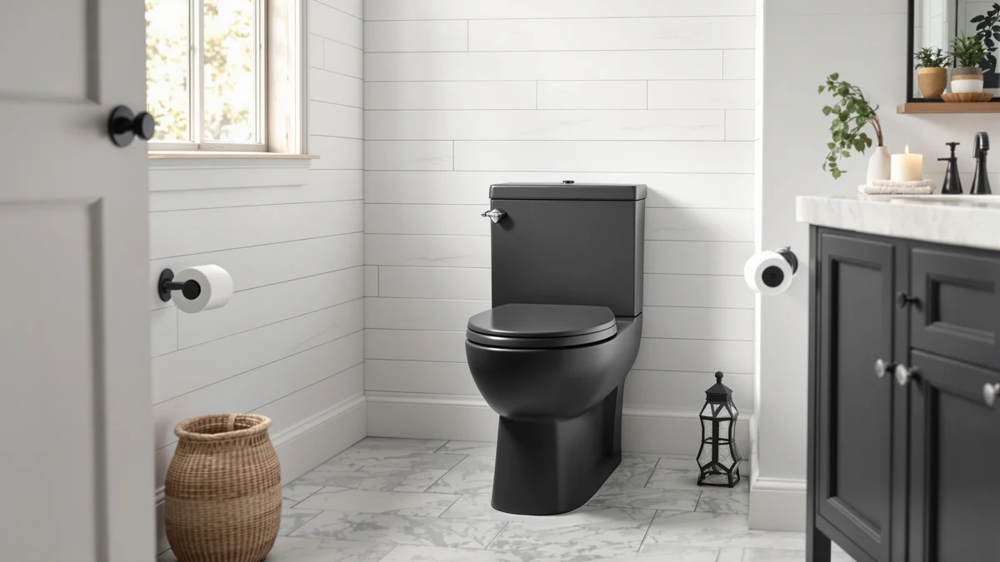

How to Remove a One Piece Toilet (2026)
Prices and picks verified as of August 2026. Independent, reader-supported reviews.


Things to Know Before You Buy
- A one piece toilet weighs 80 to 120 pounds, since the tank and bowl are cast as a single unit, so plan to lift with your knees and have a helper nearby in a tight bathroom.
- Shutting off the water and draining the tank fully before you disconnect anything keeps the job dry from start to finish.
- The wax ring under the base won't come off in one piece. Budget ten extra minutes for scraping, plus a fresh ring if you're reinstalling.
- A rag or plastic bag stuffed into the open drain blocks sewer gas the moment the toilet clears the flange.
- Closet bolts corrode over the years. Keep a hacksaw or bolt cutter within reach in case a nut won't turn.
How to remove a one piece toilet comes down to five moves: shut off the water, disconnect two connections, break one wax seal, and lift. A one piece toilet weighs more than a two piece model because the tank and bowl are molded as a single unit, so the job leans on patience and the right angle of lift rather than force. Most homeowners finish in under an hour once the water is off and the floor is protected.
You'll need this skill whether you're swapping in a new toilet, replacing a cracked bowl, or pulling one out for a full bathroom remodel. The steps below work the same way for any one piece toilet on the market, since the tank-to-bowl connection isn't a factor and every model bolts to the floor flange the same way. Grab an adjustable wrench, a screwdriver, and a few old towels, and set aside 45 minutes before you start.
What You'll Need
- Supplies: old towels or rags, a bucket, and a rag or plastic bag to plug the drain
- Tools: an adjustable wrench, a flathead screwdriver, a utility knife, and a flat pry bar or putty knife
Step 1: Shut off the water supply and drain the tank
Find the shutoff valve on the wall or floor behind the toilet and turn it clockwise until it stops. This is the first move in every one piece toilet removal, and skipping it turns a dry job into a wet one the moment you disconnect the supply line.
Flush the toilet with the valve closed to drain most of the tank, then hold the flush lever down a few extra seconds to clear the bowl as much as possible. Sponge out what's left, since a one piece design holds the tank and bowl in a single connected chamber and any leftover water will run out the moment you tip it.
Lay towels or a plastic sheet on the floor around the base. You'll set the toilet down on its side once it's free, and a fused tank-and-bowl unit is heavier and harder to control than a standard two piece model.
Step 2: Disconnect the water line and remove the bolt caps
Place a small bucket or rag under the connection point, then use an adjustable wrench to loosen the coupling nut where the supply line meets the fill valve under the tank. A few drops of trapped water usually escape here even after draining, so keep a towel within reach during this stage of removing a one piece toilet.
Move to the base and locate the two plastic caps covering the closet bolts on either side. Pop them off with a flathead screwdriver, working the blade under the edge rather than prying straight up. Some caps are held on with a thin bead of caulk or grime, and prying straight up tends to crack the plastic.
Step 3: Remove the nuts from the closet bolts
Grip each closet bolt nut with an adjustable wrench and turn counterclockwise. Bathroom humidity corrodes these nuts fast, and a bolt that won't budge is the most common holdup in removing a one piece toilet. If a nut spins without loosening, hold the bolt steady with pliers while you turn the nut.
For a seized nut, spray penetrating oil on the threads and wait ten minutes before trying again. If it still won't turn, cut through the bolt with a hacksaw or a rotary tool, keeping the blade close to the porcelain base so you don't damage the flange underneath.
Step 4: Break the wax seal and lift the toilet free
With both nuts off, straddle the toilet and rock it gently from side to side. The wax ring under the base forms an airtight seal that resists the first few movements, then releases with a soft suction sound. Avoid forcing it sideways, since the fused tank and bowl make a one piece toilet top-heavy and prone to tipping if it moves unevenly.
Once the seal breaks, lift the toilet straight up off the two bolts and set it down on the towels you laid out earlier. A standard one piece model runs 80 to 120 pounds, so bend at the knees, and if the bathroom is tight, have a second person help guide it clear of the wall and vanity.
Step 5: Plug the drain and scrape away the old wax
Sewer gas rises through an open drain within minutes, so stuff a rag, an old sock, or a sealed plastic bag into the flange opening right away. This step is easy to skip in the rush of moving a heavy toilet out of the way, and it's the one that keeps your bathroom from smelling like a sewer line for the rest of the day.
Scrape the old wax ring off the flange and the base of the toilet with a putty knife, working in one direction so you don't smear wax onto the tile. Check the flange for cracks or rust while it's exposed. If you're setting a replacement one piece toilet, confirm the flange sits level with the finished floor before you press down a new wax ring.
Common Mistakes to Avoid
Skipping the water shutoff is the mistake that turns a dry, one-hour job into a mess. Even after you flush and sponge out the tank, a few cups of water always remain in the trap, and disconnecting the supply line before it's fully closed sends that water across the floor.
Forcing a stuck toilet off the wax ring is a close second. Rocking too hard, especially sideways instead of front to back, can crack the porcelain base or snap a closet bolt flush with the flange, turning a simple removal into a repair job. If the seal won't break after a few gentle rocks, check that both nuts are fully off the bolts before you apply more pressure.
Leaving the drain uncovered is the mistake you smell before you see it. Sewer gas drifts up through an open flange within minutes and lingers in grout and drywall long after you've capped the pipe. Plug it the second the toilet clears the bolts, not after you've hauled it out to the curb.
Reusing an old wax ring is tempting when you're reinstalling the same one piece toilet, but a ring that's already been compressed once won't seal reliably a second time. Buy a fresh one for a few dollars rather than risk a slow leak that rots the subfloor months later.
Our Top Picks
If the toilet you removed is on its way out for good, these one piece replacements are worth a look. Each one drops onto a standard 12-inch rough-in with the same closet bolts and wax ring process you finished above.

Editor’s Pick
DeerValley Elongated One Piece Toilet
A comfort-height elongated bowl with a quiet dual flush, and the closest match to what most standard closet flanges expect.
$227.05
Check Price on Amazon
Best Value
Casta Diva Compact One Piece
A compact round bowl that fits small bathrooms where a full elongated model won't clear the door swing.
$209.99
Check Price on Amazon
Premium Choice
HOROW T0338W Compact One Piece
A skirted compact design with a stronger flush chamber, built for households replacing a toilet that clogged too easily.
$229.99
Check Price on AmazonFrequently Asked Questions
Do I need to turn off the water to the whole house to remove a toilet?
No. Every toilet has its own shutoff valve on the wall or floor behind it, usually a small oval handle on the supply line. Turn that valve clockwise and the rest of your plumbing keeps running normally while you work.
Can one person remove a one piece toilet alone?
Yes, though a second set of hands helps. A one piece toilet weighs 80 to 120 pounds because the tank and bowl are fused into a single unit, so lift with your knees and keep it close to your body as you clear it from the bolts.
What if the closet bolts won't come loose?
Corroded nuts are the most common holdup. Spray penetrating oil on the threads and wait ten minutes before trying again. If the nut still won't turn, cut through the bolt with a hacksaw or a rotary tool, keeping the blade close to the porcelain base.
Do I have to remove the toilet seat first?
No, you can leave the seat attached throughout the process. Removing it first only helps if you're worried about scratching it while you set the toilet down, in which case a quick unscrew of the two hinge bolts under the seat takes it off in under a minute.
How do I know if I need a new wax ring afterward?
If you're reinstalling the same toilet or setting a new one on the same flange, buy a fresh wax ring rather than reusing the old one. A ring that's already been compressed once won't seal reliably a second time, and a few dollars now beats a slow leak later.
Verdict
Five steps, in this order: shut off the water, disconnect the supply line, remove the closet bolt nuts, break the wax seal, and lift. It takes about 45 minutes and roughly $15 in supplies if you already own a wrench and a screwdriver. Whether you're pulling out an old DeerValley model for a crack along the base or clearing space for a new HOROW replacement, the steps don't change with the brand. Plug the drain and scrape the flange clean before you walk away, so the next toilet seals on the first try.